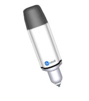
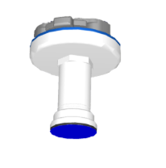
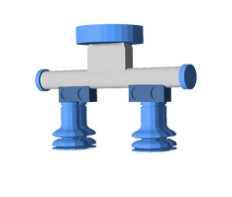

"En Wine Line gestionamos de forma integral tus pedidos de vino: ofrecemos una cuidada selección de botellas —desde opciones accesibles hasta etiquetas exclusivas— y nos encargamos del embotellado y empaquetado para que cada pedido llegue a tu puerta con la mejor calidad."
Haz tu primer pedidoEn nuestra empresa implementamos la última tecnología en procesos automatizados, especializados en el taponado de diferentes tipos de botellas de vino, específicamente de rosca y de corcho, para posteriormente empaquetarlas en diferentes cajas. Estas cajas son personalizadas dependiendo del pedido que el cliente escoja por la página web.
Pides por la web, se guarda en base de datos y llega a la planta la información. En cada cinta llegan las botellas que el cliente ha pedido, por un lado de gama alta y por otro lado de gama baja.
Con una ESP32S3 con cámara lee el código QR que estas botellas tienen para que el robot UR5e que coloca los tapones (uno por cada cinta) sepa qué tipo de tapón debe colocar cuando llegue la botella.
Después del taponado, las botellas de ambas cintas llegan al alcance de otro robot UR10e el cual coge las botellas de 2 en 2 y las empaqueta en cajas, las cuales están en otra cinta. Y por último se envían las cajas a los compradores.
Herramienta de taponado de tapones enroscados de botella de gama alta
Herramienta de taponado de tapones de corcho de botella de gama baja
Herramienta de ventosas para empaquetado de botellas de vino
Proyecto de PR2 grupo A7